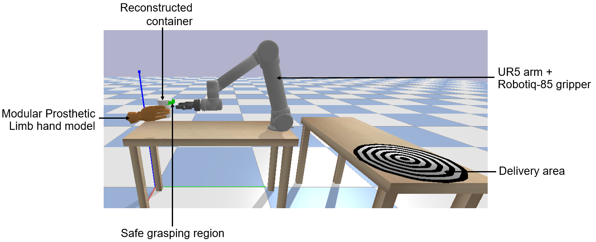
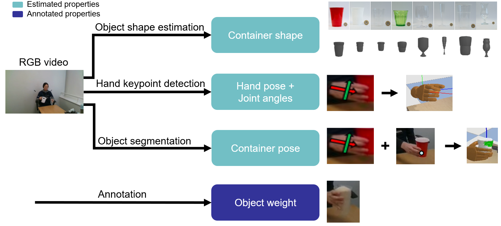
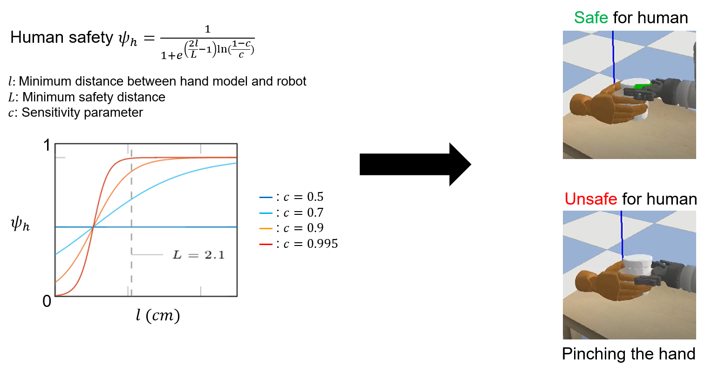
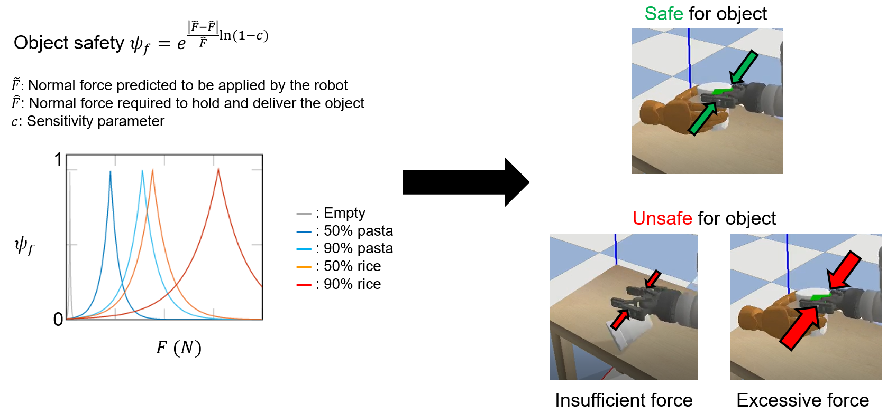

Towards safe human-to-robot handovers of unknown containers
Safe human-to-robot handovers of unknown containers require accurate estimation of the human and object properties, such as hand pose, object shape, trajectory, and weight. However, accurate estimation requires the use of expensive equipment, such as motion capture systems, markers, and 3D object models. Moreover, developing and testing on real hardware can be dangerous for the human and object.
We propose a real-to-simulation framework to conduct safe human-to-robot handovers with visual estimations of the physical properties of unknown cups or drinking glasses and of the human hands from videos of a person manipulating the object. We complete the handover in simulation and we quantify the safeness of the human and object using annotations of the real object properties. To further increase the safety for the human, we estimate a safe grasp region, i.e. not occluded by the hand of the person holding the object, for the robot to grasp the object during the handover.
We validate the framework using public recordings of objects manipulated before a handover and show the safeness of the handover when using noisy estimates from a range of perceptual algorithms.
Handover environment
We recreate in PyBullet the handover setup that consists of the 6 DoF robotic arm (UR5) equipped with a 2-finger parallel gripper (Robotiq 2F-85); a table where object manipulation and handover is happening, as well as where the robot is placed; an additional table behind the robot for delivering the object in a targeted area; a 3D container model; and left and right human hands based on the Modular Prosthetic Limb model.

Perception pipeline
We estimate the physical properties of an object, such as dimensions and mass, the object location and the hand poses over time from video inputs. Videos are acquired by fixed, calibrated stereo cameras, that capture object manipulation and human manoeuvring from the real scene. We first segment the object using Mask R-CNN and track the mask in subsequent frames using SiamMask. We use LoDE to estimate the object shape from the segmentation mask and we use OpenPose to estimate the hand pose and finger joint angles. Finally, we weight the objects using a high precision electronic scale and set the object weight in simulation accordingly.

Selecting safe grasp region
During the handover, the robot approaches the human to receive the object using the predicted time-varying object centroid location as input to the robot controller. However, the object centroid can be inaccurate and occluded by the human hand. We thus seek the region on the container surface that is not affected by the hand occlusion to execute the robot grasp. If a safe region is not available, the control algorithm will keep the robot at a fixed distance from the container to guarantee the safety of the human.
Human and object safety
We assess the safeness of a handover within a simulation environment by separately quantifying the probability of grasping a container while not touching the human hand (human safety), and quantifying the probability that ensures the robot does not drop, break or deform the container based on the predicted force to be applied (object safety).
| Human safety |
|---|
|  |
| Object safety |
|  |
Example handovers in simulation
| Grasping | Delivery | Real recording | Simulation |
|---|---|---|---|
| ✔ | |||
| ✔ | ✔ | ||
Related material
Pre-print (arXiv)
Towards safe human-to-robot handovers of unknown containers
Y. Pang, A. Xompero, C. Oh, and A. Cavallaro
IEEE International Conference on Robot and Human Interactive Communication (RO-MAN), Virtual, 8-12 August 2021.
Sponsors


Partners